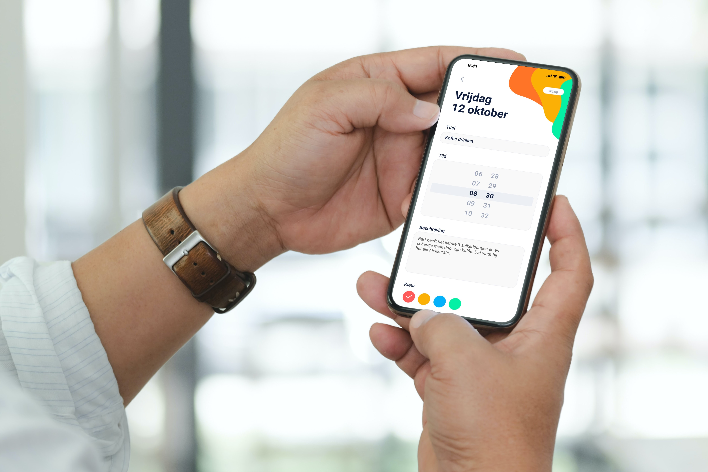

February 2022 - May 2022
Foodsie
For a school project, I collaborated with a team of designers to create an application that would teach children how to do the groceries by them selves while only picking the appropriate items.

Color. ü§∑
This project was a big UX puzzle because we had to think of a way to secure the childrens safety, to do this we made it possible for the parents to track their kids. Also we added a chat function for quick questions about the groceries.
By far the biggest challange — design wise — during this project was picking colors that would not only appeal to our very young audience but would also still be usable for the parents. To do this we basically used two color palettes. One with bright colors which we used for main- and background colors, and another with darker colors which was mainly used for CTA's and contrast.
#F5F6F8
Aa
#D9D9D9
Aa
#4DB8E5
Aa
#007AFF
Aa
#FF6E83
Aa
#A0A0A0
Aa
#1C1C1C
Aa
#EB7A25
Aa
#FAD31D
Aa
#805AA5
Aa
Typography. ü§∑‚Äç‚ôÇÔ∏è
Because the main colors we used were so bright and playful we had to use a font that felt light and swift. This is why we used Quicksand, a font that is characterised by it's round and geometric shapes with thin strokes.
Because the main audience for this project was children around the age of 11 it was quiet diffecult for me to identify with them. This made me realise just how important research is. Without talking to the audience we would have never reached this final design.
Quicksand
h1 - 48px Bold
h2 - 32px Bold
h3 - 28px Bold
p - 16px Regular
AaBb
Aa Bb Cc Dd Ee Ff Gg Hh Ii Jj
Kk Ll Mm Nn Oo Pp Qq Rr Ss
Tt Uu Vv Ww Xx Yy Zz
0 1 2 3 4 5 6 7 8 9
-

Apatiency
UI design - App design
-

1SociaalDomein
Rebrand - Webdesign